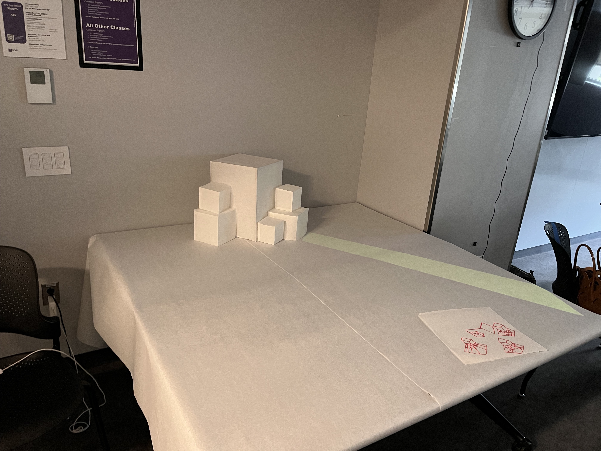
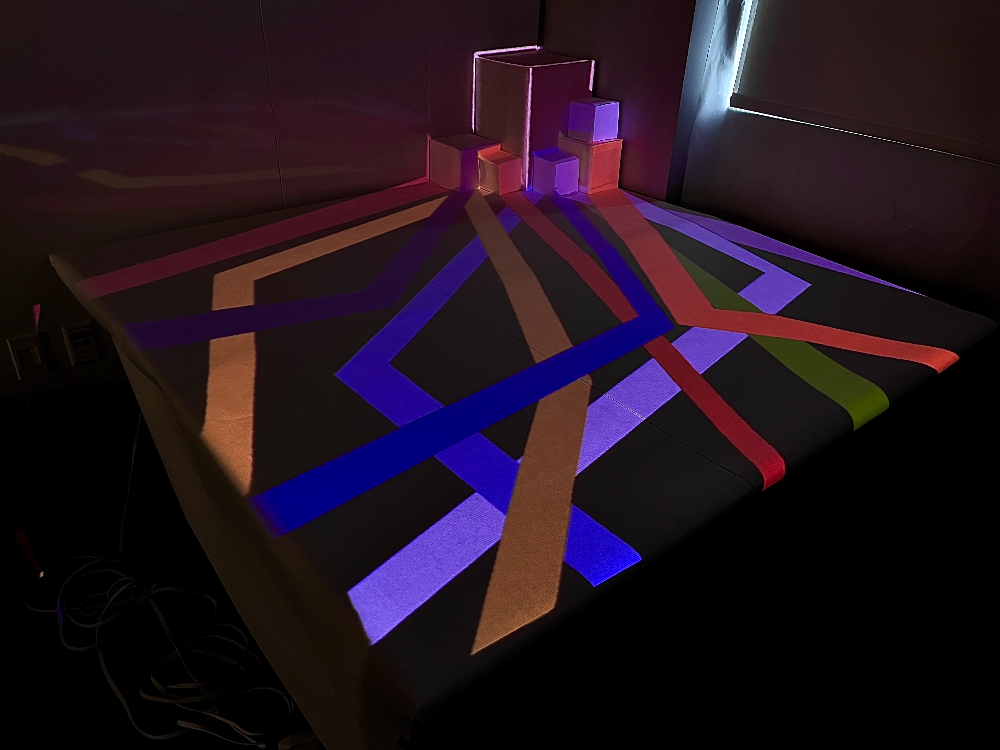

MEISEI Clossing



- MadMapper
- プロジェクター
- マイク
ニューヨーク大学で行われたITP CAMPの最終発表で制作した作品
1ヶ月間のITP CAMPに参加し、多くの人々と出会った。映像を制作する人、音楽を制作する人、CGでアニメーションを作る人、電子工作が得意な人、大規模なネットワーク制御に精通した人など、さまざまなバックグラウンドを持つ参加者が集まっていた。
初めは、このように多様な分野の人々が一堂に会する環境に驚いたが、日が経つにつれ、すべての人が「良いものを作ろう」という共通の目標を持っていることに気づいた。
それぞれが自分のやり方で他者を楽しませ、感動させようとするこの空間は非常に心地よいものであった。
この作品に映し出されている線は、参加者の多様なバックグラウンドを表している。それぞれの参加者が、中央に配置された直方体という共通の目標に向かって進んでいる様子を表現した。
また、ITPの空間ではコミュニケーションが活発に行われ、誰もが他者の意見やアイデアを自身の作品に取り入れていると感じた。そのため、1段目や2段目の直方体の2つの面には異なる色の線を映し出し、上面はそれらが混ざり合った色にしている。
異なる道が交わり、最終的に1つの色となることで、ITPという空間の一体感を表現しようと試みた。